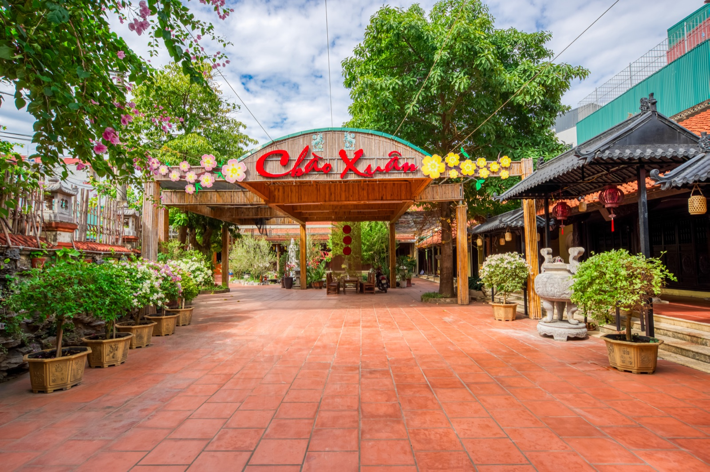
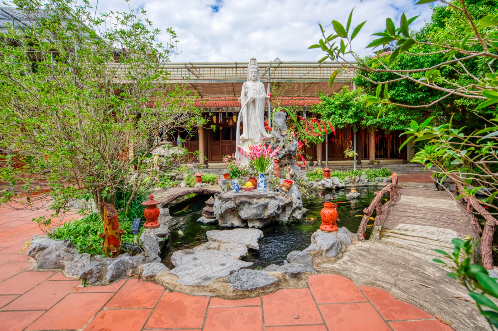

Tây Tựu 360 là nền tảng số hóa giới thiệu tổng quan về phường Tây Tựu, hệ thống di tích lịch sử – văn hóa, lễ hội và làng nghề truyền thống qua không gian thực tế ảo 360° và bản đồ số tương tác.
Nhấn Trải nghiệm 360 ở đầu trang để xoay, phóng to và quan sát toàn cảnh phường Tây Tựu.
Tìm kiếm hoặc chọn di tích trực tiếp trên Bản đồ số Di tích Phường Tây Tựu hoặc danh sách di tích.
Mở Chi tiết để xem thông tin, nghe audio giới thiệu, tham quan VR 360° hoặc nhận chỉ đường thực tế.
Được thành lập ngày 01/7/2025, phường Tây Tựu có tổng diện tích 7,54 km² với quy mô dân số 52.730 người (trong đó có 13.500 dân số tạm trú), nằm ở vị trí trung tâm của hành lang phát triển phía Tây Bắc Thủ đô với ranh giới hành chính là 4 tuyến giao thông trọng điểm (đường Tây Thăng Long; đường Vành đai 3,5 đi cầu Thượng Cát; đường 32).
Phường có vị trí địa lý thuận lợi, quy hoạch bởi các phân khu đô thị GS, S1, S2; có quỹ đất được phát triển đô thị rộng, với địa hình thuận lợi để phát triển theo quy hoạch. Hiện nay, quy hoạch phân khu đô thị cơ bản phủ kín trên địa bàn phường (quy hoạch chi tiết 1/500 chiếm tỷ lệ khoảng 21%) – tạo cơ sở thuận lợi để quản lý quy hoạch, hoạch định đầu tư và là công cụ để quản lý quá trình phát triển đô thị, nhất là phát triển hệ thống hạ tầng kỹ thuật và hạ tầng xã hội, đáp ứng nhu cầu thực tiễn.
Trên địa bàn có hệ thống đường giao thông chính của Thành phố: đường Tây Thăng Long; đường Vành đai 3,5 đi cầu Thượng Cát; đường 32; đường 3.5 nối đường Hoàng Quốc Việt kéo dài đến Khu công nghiệp Nam Thăng Long; đường 70 đi Khu Công nghệ cao sinh học; đường 70 đi Khu đô thị chức năng Tây Tựu;… Ga Depot Nhổn là trung tâm điều hành kỹ thuật, bảo dưỡng và sửa chữa chính của tuyến metro Nhổn – ga Hà Nội với hệ thống kho, bến, bãi phụ trợ tiện ích xung quanh, là hạ tầng kỹ thuật cốt lõi giúp đảm bảo hoạt động của tuyến đường sắt đô thị số 3.
Nhiều dự án quan trọng đã và đang triển khai trên địa bàn, tác động tích cực đến sự phát triển kinh tế – xã hội: Dự án Công viên công nghệ số và hỗn hợp (diện tích 196 ha) đã khởi công ngày 16/01/2026, được Thành phố định hướng trở thành một hạt nhân quan trọng trong hệ sinh thái đổi mới sáng tạo của Thủ đô, gắn với mục tiêu xây dựng trở thành trung tâm lớn về khoa học, công nghệ và kinh tế số của cả nước, với tổng vốn đầu tư trên 2 tỷ đô la Mỹ và quy mô đáp ứng 60.000 chuyên gia, kỹ sư công nghệ số, đổi mới sáng tạo và lao động phụ trợ; Khu chức năng đô thị Tây Tựu (diện tích 86 ha) với quy mô dân số gần 10.000 người kết nối các tuyến đường giao thông trọng điểm của Thành phố tạo thành một quần thể đô thị hiện đại ở phía Tây Bắc Thủ đô;…
Trên địa bàn có 01 Cụm Công nghiệp với 29 doanh nghiệp kinh doanh trên các ngành nghề về công nghiệp ô tô, in, có 711 doanh nghiệp đang hoạt động, trên 3.000 hộ kinh doanh, 15 HTX (10 HTX thuộc lĩnh vực nông nghiệp và dịch vụ tổng hợp; 05 HTX thuộc lĩnh vực phi nông nghiệp).
Phường có hệ thống di sản văn hóa, làng nghề truyền thống với 16 di tích (trong đó có 14 di tích đã được xếp hạng gồm 12 di tích cấp quốc gia và 02 di tích cấp Thành phố), 02 di tích đang trình xếp hạng; có 01 Di sản văn hoá phi vật thể cấp quốc gia: Lễ hội bơi Đăm truyền thống; có Làng nghề truyền thống Hoa Tây Tựu, Bưởi Diễn (sản phẩm OCOP)… Nghề trồng hoa truyền thống đến nay đã được Cục Sở hữu trí tuệ công nhận Nhãn hiệu tập thể; áp dụng công nghệ, khoa học với mạng lưới sản xuất, kinh doanh kết nối với các vùng trồng hoa vệ tinh và tiêu thụ sản phẩm trong và ngoài nước (từ củ giống, cây giống tới thành phẩm hoa cung cấp ra thị trường,…); kết hợp với vùng quy hoạch và bảo tồn hoa, chợ Hoa Tây Tựu.
Dự án nạo vét, cải tạo cảnh quan sông Pheo kết hợp Đề án phát triển Công nghiệp văn hóa (gắn với di sản kiến trúc nghệ thuật, di sản văn hóa phi vật thể quốc gia và công nghệ số, làng nghề) trong đó, quan tâm thiết lập nền tảng liên kết phối hợp của 4 chủ thể: Nhà nước (các sở ngành thành phố, cấp ủy, chính quyền phường); Người sáng tạo, nhà sản xuất; Doanh nghiệp du lịch, tổ chức sự kiện và Nhân dân (Nhân dân địa phương và du khách trong và ngoài nước) đang được triển khai sẽ phát triển du lịch, dịch vụ, kinh tế đêm và 02 tuyến phố đi bộ; Điểm du lịch Vườn Thực vật rộng 20 ha có hơn 300 loài thực vật thân gỗ.
Trên địa bàn có các đơn vị nghiên cứu lớn như: Trung tâm Nhiệt đới Việt – Nga là cơ sở nghiên cứu khoa học và công nghệ hỗn hợp quốc tế đa ngành phục vụ mục đích quân sự, quốc phòng và phát triển kinh tế – xã hội; Cục Viễn thám Quốc gia là cơ quan quản lý nhà nước cao nhất về lĩnh vực viễn thám, thu nhận, xử lý và cung cấp dữ liệu ảnh vệ tinh;… Đại học Công nghiệp (02 cơ sở) với 05 trường đại học trực thuộc và nhiều khoa chuyên ngành, quy mô 25.000 sinh viên đáp ứng nhu cầu đào tạo đa ngành nghề (ngoại ngữ, du lịch, cơ khí, ô tô, kinh tế, công nghệ thông tin, truyền thông, điện, điện tử,…) cho sinh viên, học viên thủ đô Hà Nội và cả nước; đồng thời đào tạo nguồn nhân lực xuất khẩu lao động tới thị trường Quốc tế. Ngoài ra, Trường Đại học Tài nguyên và Môi trường được xây dựng hiện đại thành đại học trọng điểm quốc gia với cơ sở vật chất hiện đại, đẩy mạnh chuyển đổi số, đào tạo theo hướng ứng dụng. Trường Trung cấp nghề Giao thông công chính là cơ sở giáo dục nghề nghiệp công lập trọng điểm, đang được xây dựng thành trường cao đẳng chất lượng cao của Thành phố. Hệ thống 08 trường mầm non, phổ thông với 15 điểm trường; trong đó có 01 trường mầm non, 01 trường tiểu học, 01 trường THCS là trường Chất lượng cao. Các cơ sở y tế như Bệnh viện Lão khoa Hà Nội; Dự án Bệnh viện – Đại học Phenikaa;… phục vụ, chăm sóc người dân trong và ngoài Hà Nội.
Tây Tựu được đánh giá là Phường có tốc độ phát triển nhanh trong thời gian tới, với quy mô dân số ước tăng gần 100.000 người (gấp 3 lần số dân hiện tại); có vai trò trung tâm kinh tế, tài chính, văn hóa, giáo dục, đào tạo, y tế, du lịch, khoa học và công nghệ, đầu mối giao thông, góp phần quan trọng thúc đẩy sự phát triển kinh tế – xã hội ở hành lang phía Tây Thủ đô. Trong đó tập trung phát triển các loại hình kinh tế đô thị, đặc biệt là thương mại, dịch vụ, logistics, dịch vụ kho bãi, sản xuất, kinh doanh quy mô nhỏ và vừa; công nghiệp văn hóa gắn với di sản và làng nghề, phát triển ngành nghề trồng hoa và trồng bưởi truyền thống gắn với công nghệ cao; kinh tế đêm, kinh tế số,… trở thành một đô thị xanh, hiện đại, công nghệ cao.
Chính quyền và Nhân dân phường Tây Tựu luôn hoan nghênh, tạo mọi điều kiện và đồng hành cùng các đơn vị, doanh nghiệp đến nghiên cứu, đầu tư, phát triển sản xuất, kinh doanh thúc đẩy kinh tế – xã hội Phường phát triển bền vững và phát triển văn hóa – du lịch.
Cùng khám phá ngay những điểm đến tuyệt vời ở Tây Tựu bạn nhé!

